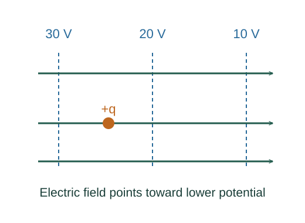

Derive potential from an electric field
Electric potential is potential energy per unit test charge. Its spatial change encodes the work per charge performed by an electrostatic field.
What the symbols mean
V: electric potential (J/C); 𝐄: electrostatic field; Q: source point charge; r: distance to it; 𝐥: path coordinate.
When this applies
Electrostatic conservative field. For an isolated point charge choose zero potential at infinity.
Developing the argument

Relate electric work and potential energy
A test charge q feels force q𝐄. Its conservative work over a path is q times the field integral, and the potential-energy change is minus that work.
A closer lookWhy does potential energy use minus work? ↗Divide out the test charge
Defining V = U/q makes the potential a property of the source field rather than the test charge used to probe it.
Integrate a point-charge field
For radial travel, Er = keQ/r². Integrate from infinity to r, keeping Q signed.
Reverse the construction
For a tiny displacement along x, dV = −Eₓ dx. Thus the field is minus the spatial derivative of potential; in three dimensions it is the negative gradient.
A worked example
A positive charge moving along the field through a potential drop of 10 V loses 10 J of electric potential energy per coulomb.
Derivation behind this calculation ↗A point to keep straight
Potential is a signed scalar and can cancel when fields do not. A time-varying magnetic field requires more than a scalar electrostatic potential.
Check the assumptions and derivation ↗